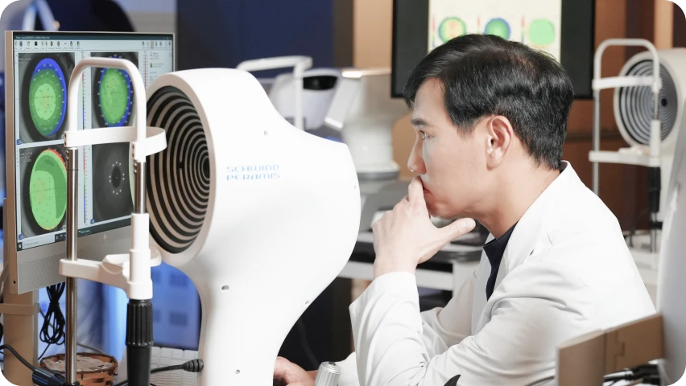
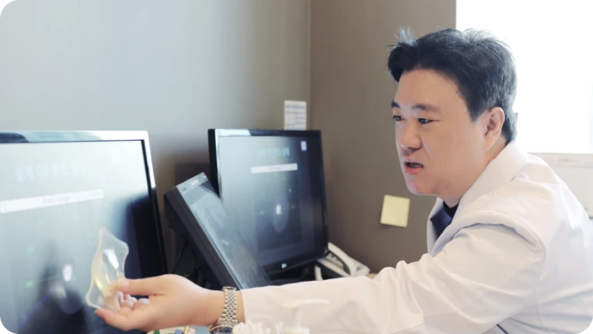
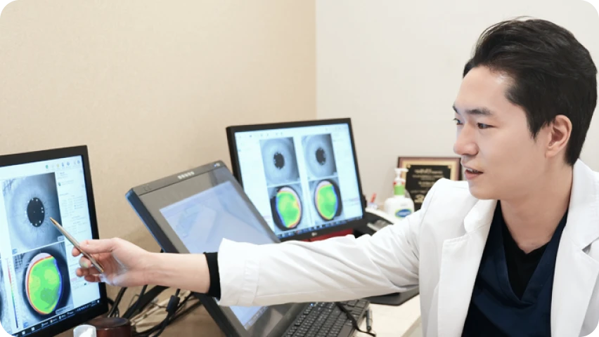
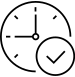

검사 당일에 수술까지, 시간과 동선은 줄이고
안전의 원칙을 지키는 아이리움의 약속
검사와 수술을 하루에, 아이리움안과의 원데이 시력교정수술은
검사 당일에 수술까지 진행하여 고객님의 시간과 동선을 최소화합니다.
입체적 정밀 검사와 진단

입체적 정밀 검사와 진단

1:1 맞춤 설계

* 수술 전 검사는 일반 검사와 동일한 검사장비와 절차로 진행하며 모든 당일 수술은 검사 결과 수술이 적합할 경우에만 가능합니다.
* 아이리움안과는 검사를 간소화 하거나 무리한 수술을 권하지 않습니다.
사전예약 필수
렌즈 착용 중지
당일 주의 사항
당일 예약 시간 준수

단 하루 만의 변화, 편안하고 선명하게
바쁜 일상 속에서도 가능한 당일 검사·수술 원데이 시스템